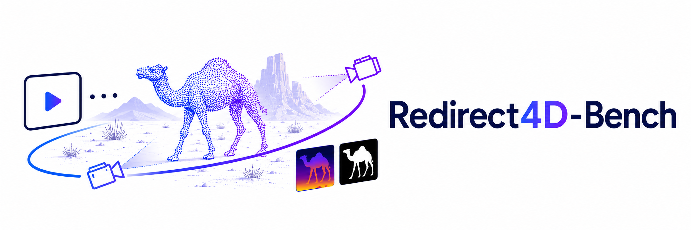
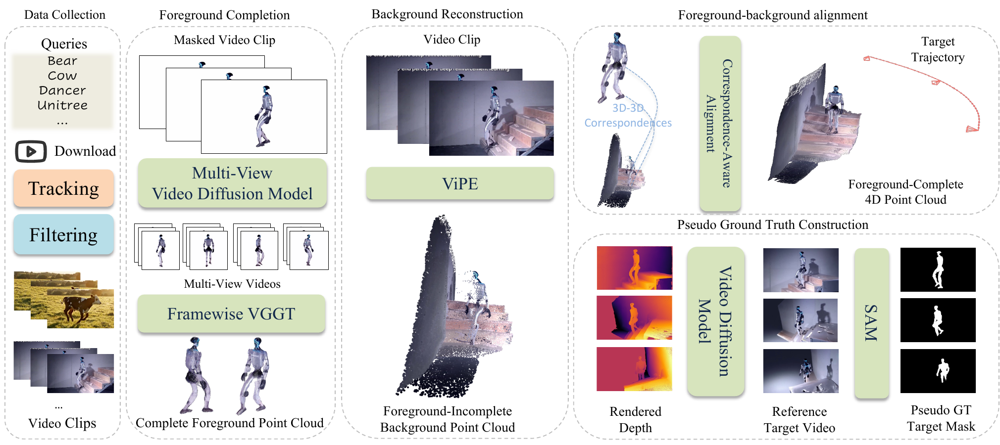
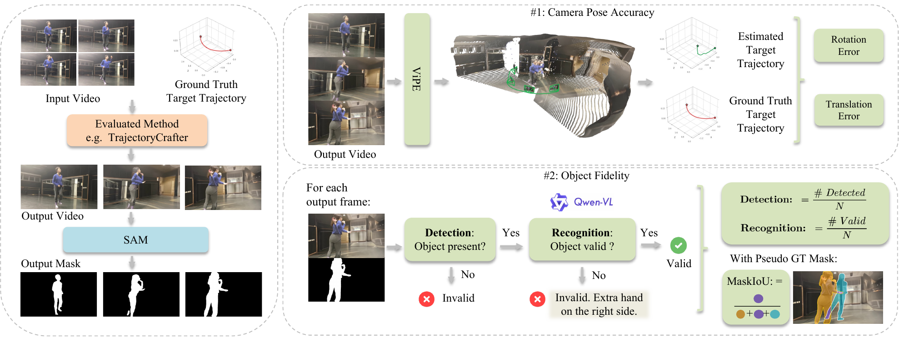

TL;DR: Redirect4D-Bench is a dataset and benchmark for camera redirection of monocular dynamic videos, with per-clip pseudo-4D references that directly measure camera following and subject placement.
Camera redirection takes a monocular source video and replays the same dynamic event along a target camera trajectory.
High video-metric scores do not imply successful camera redirection. On the wolf comparison below, per-column CLIP/VBench winners (red) are spread across the baselines, yet none of those winning videos completes the task. Only FreeOrbit4D follows the requested trajectory while keeping the wolf intact, matching the human verdict.
Source video (wolf, yaw −80, scale 0.9)
4D reconstruction (drag/scroll/play; blue = target trajectory, red = source-video trajectory)
| Method | Output | CLIP ↑ | VBench ↑ | Human Evaluation | ||||||||
|---|---|---|---|---|---|---|---|---|---|---|---|---|
| T | F | V | SC | BG | TF | MS | AQ | IQ | OC | |||
| ReCamMaster | 0.314 | 0.967 | 0.920 | 0.898 | 0.938 | 0.944 | 0.970 | 0.569 | 0.715 | 0.313 | ❌Does not follow trajectory | |
| TrajectoryCrafter | 0.284 | 0.948 | 0.802 | 0.733 | 0.903 | 0.933 | 0.964 | 0.440 | 0.741 | 0.265 | ❌Distorted geometry | |
| GEN3C | 0.288 | 0.951 | 0.864 | 0.708 | 0.919 | 0.948 | 0.982 | 0.546 | 0.660 | 0.293 | ❌Distorted geometry | |
| FreeOrbit4D | 0.304 | 0.954 | 0.856 | 0.825 | 0.920 | 0.932 | 0.977 | 0.531 | 0.565 | 0.293 | ✅Looks good! | |
CLIP-T/F/V: text, adjacent-frame, and source-video consistency. VBench: SC subject, BG background, TF temporal-flickering, MS motion-smoothness, AQ aesthetic, IQ imaging, OC overall consistency. Per-column best in green. The CLIP/VBench winners scatter across all four methods, while the human verdict points to the only one that completes the redirection.
Source clips are curated from in-the-wild YouTube videos: category-level queries fetch candidates, which are split into shot-level clips and turned into object-centric crops with Grounded-SAM masks. Each clip's RGB + mask drives a reconstruction stack that recovers geometry-complete foreground 4D point clouds and a ViPE background. Target trajectories then render depth and rough masks; a frozen prompt feeds the Wan generator, and MaskRefine produces the pseudo-GT target mask used for evaluation.

Object fidelity uses SAM3 propagation to extract masks from each submitted RGB video and compares them to the dataset target pseudo-GT mask. Camera-pose accuracy reconstructs the camera path from each generated video with a pinned reconstruction stack and compares it to the requested target trajectory. CLIP, FID/FVD, and VBench are reported alongside.

Each Redirect4D-Bench track ships with a source RGB clip, the reconstructed 4D point cloud, and per-trajectory pseudo-GT mask + depth. The interactive viewer overlays the foreground/background point cloud, the target trajectory (blue), and the original source-video trajectory (red).
Source RGB · Camel
4D reconstruction (interactive)
Target pseudo-GT mask
Target rendered depth
Source RGB · Deer
4D reconstruction (interactive)
Target pseudo-GT mask
Target rendered depth
Source RGB · Robot #1
4D reconstruction (interactive)
Target pseudo-GT mask
Target rendered depth
Source RGB · Robot #2
4D reconstruction (interactive)
Target pseudo-GT mask
Target rendered depth
Source RGB · Tiger
4D reconstruction (interactive)
Target pseudo-GT mask
Target rendered depth
Source RGB · Cow
4D reconstruction (interactive)
Target pseudo-GT mask
Target rendered depth
Source RGB · Robot #3
4D reconstruction (interactive)
Target pseudo-GT mask
Target rendered depth
Source RGB · Robot #4
4D reconstruction (interactive)
Target pseudo-GT mask
Target rendered depth
Source RGB · Robot #5
4D reconstruction (interactive)
Target pseudo-GT mask
Target rendered depth
Source RGB · Cat
4D reconstruction (interactive)
Target pseudo-GT mask
Target rendered depth
Source RGB · Robot #6
4D reconstruction (interactive)
Target pseudo-GT mask
Target rendered depth
Source RGB · Robot #7
4D reconstruction (interactive)
Target pseudo-GT mask
Target rendered depth
Source RGB · Deer #2
4D reconstruction (interactive)
Target pseudo-GT mask
Target rendered depth
Four representative cases, each scored with the full CLIP + VBench stack alongside Redirect4D-Bench's Camera accuracy, Object fidelity, and Subject localization metrics. Per-column best in green. Click a case to switch.
Camel · yaw 120 / pitch -20
| Method | Traditional video metrics | Human | Redirect4D-Bench metrics | ||||||||||||||
|---|---|---|---|---|---|---|---|---|---|---|---|---|---|---|---|---|---|
| CLIP ↑ | VBench ↑ | Camera acc. ↓ | Object fid. ↑ | Subject loc. ↑ | |||||||||||||
| T | F | V | SC | BG | TF | MS | AQ | IQ | OC | RotErr | TransErr | D | R | cIoU | R·cIoU | ||
| TrajectoryCrafter | 0.311 | 0.949 | 0.846 | 0.796 | 0.907 | 0.933 | 0.968 | 0.498 | 0.748 | 0.223 | ❌ | 3.99 | 0.15 | 1.000 | 0.044 | 0.493 | 0.022 |
| ReCamMaster | 0.317 | 0.983 | 0.935 | 0.931 | 0.911 | 0.962 | 0.984 | 0.507 | 0.709 | 0.219 | ❌ | 27.31 | 0.73 | 1.000 | 0.756 | 0.095 | 0.071 |
| GEN3C | 0.301 | 0.949 | 0.849 | 0.814 | 0.939 | 0.958 | 0.984 | 0.498 | 0.685 | 0.215 | ❌ | 7.10 | 0.16 | 1.000 | 0.178 | 0.507 | 0.090 |
| FreeOrbit4D | 0.304 | 0.934 | 0.858 | 0.874 | 0.934 | 0.952 | 0.982 | 0.554 | 0.703 | 0.223 | ✅ | 0.79 | 0.03 | 1.000 | 1.000 | 0.919 | 0.919 |
CLIP-T/F/V: text, adjacent-frame, source-video consistency. VBench: SC subject, BG background, TF temporal-flickering, MS motion-smoothness, AQ aesthetic, IQ imaging, OC overall consistency. Camera acc.: RotErr (°), TransErr (m), lower is better. Object fid.: D detection rate, R recognition rate. Subject loc.: cIoU mean cMaskIoU on detected frames, R·cIoU recall-weighted across all frames.
If you find Redirect4D-Bench useful, please cite our work.
@misc{cao2026redirect4dbench,
title = {Redirect4D-Bench: A Dataset and Benchmark for Camera Redirection of Monocular Dynamic Videos with Pseudo-4D References},
author = {Wei Cao and Hao Zhang and Jiapeng Tang and Yulun Wu and Yingying Li and Ning Yu and Shenlong Wang and Yaoyao Liu},
year = {2026},
}